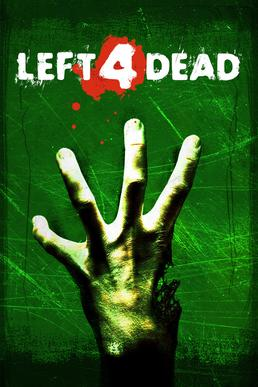

Один из четырёх играбельных Выживших в Left 4 Dead 2. Он самый младший в группе. Младший механик по профессии в городе Саванна , он представляет себя как чудаковатый, любящий пиво деревенский парень с неискушённым и порой наивным взглядом на мир.
Картёжник и шулер с тёмным и жестоким прошлым. Кажется, он совсем не хочет быть частью группы и берёт на себя роль «брюзги»: постоянно видит недостатки в планах остальных героев, всё больше и больше печалится о состоянии своего некогда прекрасного костюма, вечно находит изъяны у своих напарников и осуждает их. Сначала всё это усложняет отношения с другими, но со временем он учится им доверять и в итоге доказывает, что тоже является важной частью команды.

Он был учителем здоровья в старшей школе и координатором футбольной команды новичков до того, как Инфекция поразила его родной город Саванна . Он самый старший в группе и берёт на себя ответственность мотивировать своих товарищей Выживших.